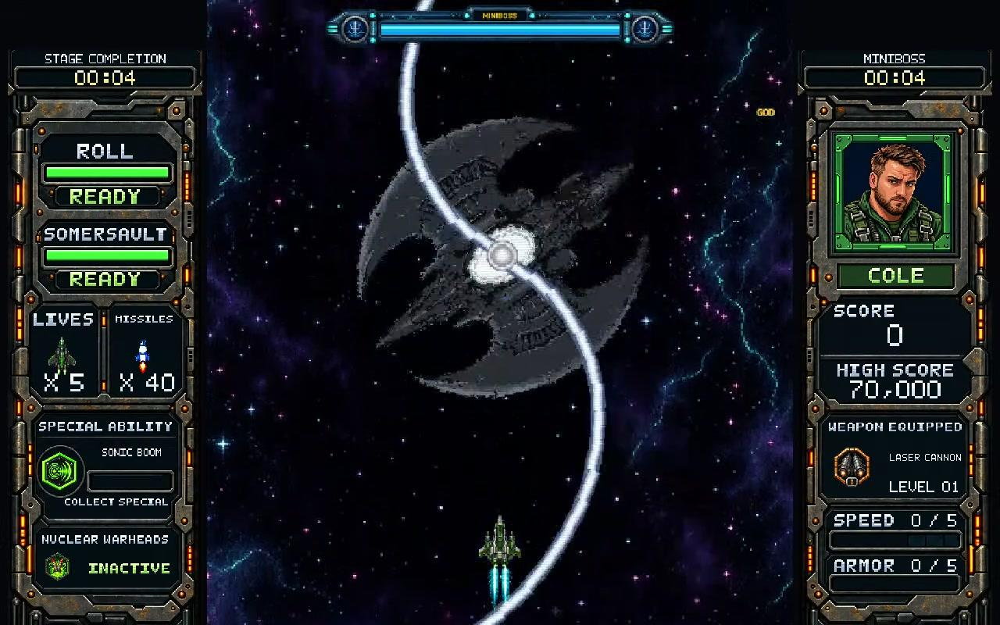
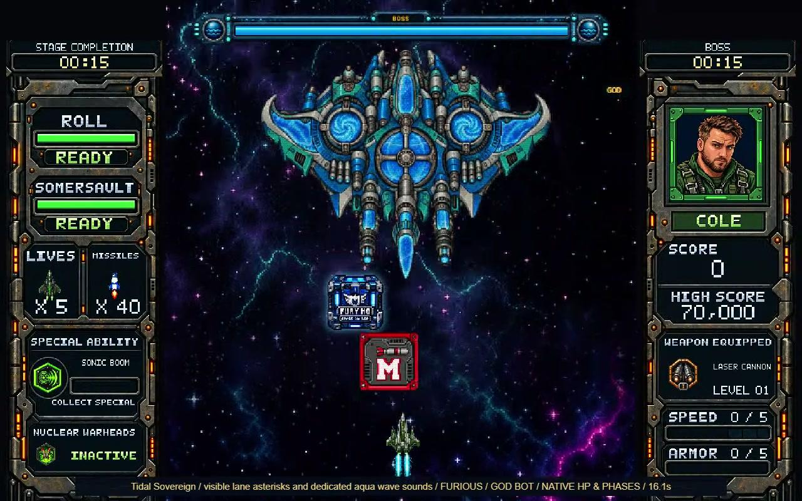

Complete anatomy
Lock the exact module count, full hull silhouette, clean broken mounts, physical pivots, muzzle sockets and damage masks. Exploded insets are concepts; they are not cut-ready sprite sheets.
Your approved Sumpjaw fight is now a pair. Below it are three new Stage 6 miniboss/boss pairs and three new modular Stage 9 pairs. You can mix your favorite miniboss and boss from different options.
Fresh real-engine Furious fight. Cole uses an invulnerable input-only observer; health, parts and defeat run normally. No enemy HP, phase or timer writes during filming.
Two visible toxic gills protect each heart. Shots pass through the sealed center to reach live gills. A broken gill changes the visible creature; both ruptured gills expose that creature's intake heart. Its local health bar includes all three pools.
They alternate ground-warned breaches, arcing toxic globules and committed bite lunges. Toxic scatter expires without bouncing. The survivor keeps fighting after its partner breaks apart. Normal and Hard retain the Caustic Dredger.
Open in the fight library · Open full recording · Inspect authored poses
A precision aircraft direction, an insect-and-grapple direction, and a very different pair of wind machines.
New machines based on the current alien-optic and hydraulic-warship roles. The proposed weapons, reservoirs, vanes and fans are complete detachable assemblies with real sockets, so their eventual attack frames can be authored properly.


Use “Shortlist” below any design to compare choices. This saves your favorites locally; approval and production still wait for your message.
Lock the exact module count, full hull silhouette, clean broken mounts, physical pivots, muzzle sockets and damage masks. Exploded insets are concepts; they are not cut-ready sprite sheets.
Even fixed cells, matched whole turn/depth poses, drift, barrel roll and somersault for aircraft; independent turret recoil, fan spin, charge, hit and rupture frames for modules.
Match warnings to the true launchers, test every damage gate, preserve ordinary unshootable bullets and shootable physical missiles, and verify attacks and sound in native footage before acceptance.